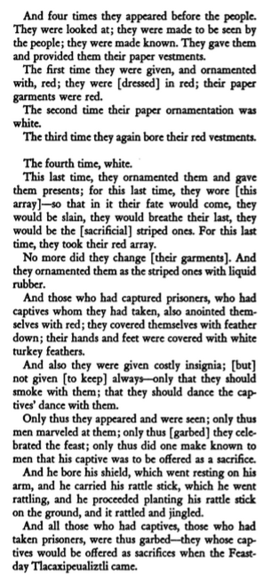

Format:
((Month Number))
Ritual Name: Atl Caualo; "ceasing of water"
Associated Gods: Tlaloc, Chalchitlicue, Quetzalcoatl
Elements: Rain, Water, Wind
((Description of ritual))
(These screenshots are a placeholder taken directly from the Florentine Codex)

((This will be an analysis of the symbolism behind elements of the ritual and the material environment))
Return Home
(Site Index)